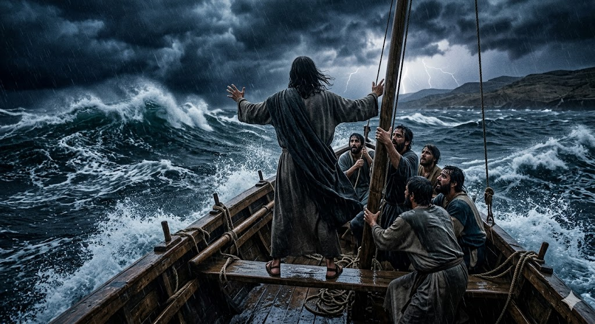

După o zi lungă, Iisus și prietenii Săi s-au urcat într-o barcă pentru a traversa marea. Iisus era atât de obosit încât a adormit imediat pe o pernă, în partea din spate a bărcii.
1. Începe Furtuna
Deodată, un vânt puternic a început să sufle. Valurile s-au făcut atât de mari încât loveau barca și o umpleau cu apă. Ucenicii (prietenii lui Iisus) trăgeau de vâsle, dar barca abia se mai ținea la suprafață.
2. Trezirea lui Iisus
Ucenicii erau îngroziți! Au alergat la Iisus, L-au trezit disperați și au strigat: „Învățătorule, nu-Ți pasă că pierim?”. Le era foarte frică, uitând că Acela care a creat marea era chiar cu ei în barcă.
3. „Taci! Fără larmă!”
Iisus S-a ridicat liniștit. Nu S-a panicat. S-a uitat la valurile uriașe, a întins mâna și a spus doar trei cuvinte: „Taci! Fără larmă!”. Imediat, vântul s-a oprit și s-a făcut o liniște perfectă. Marea era ca o oglindă.

„El S-a sculat, a certat vântul şi a zis mării: «Taci! Fără larmă!» Vântul a stat şi s-a făcut o linişte mare.”
- Marcu 4:39
🌟 Concluzia Noastră
Uneori, ni se întâmplă lucruri care ne sperie, la fel ca o „furtună”. Dar trebuie să ținem minte că nu suntem singuri în barcă. Iisus este cu noi și are puterea să aducă pace și liniște în orice situație grea!